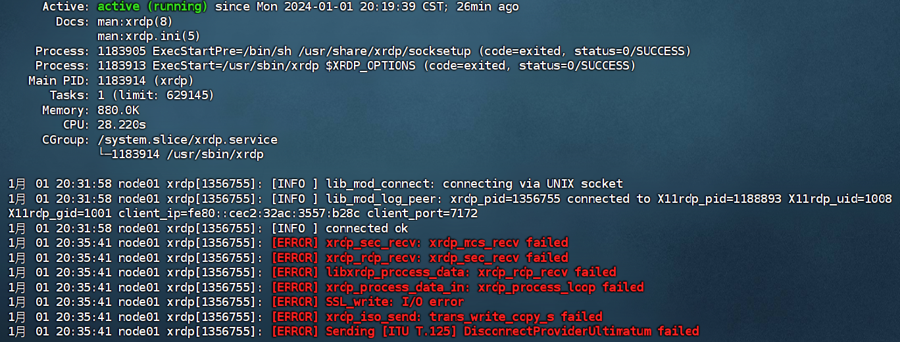
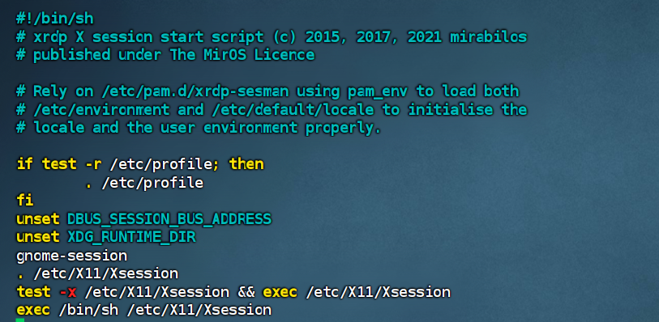

在调试webrtc代码的时候，SSH远程连到服务器不能显示弹出来的窗口，所以远程到服务器桌面调试。
安装xrdp
1 | sudo apt install xrdp |
安装完成后验证 xrdp 状态：1
sudo systemctl status xrdp
显示内容如下：

有部分报错，但是能够使用，暂时没有去解决这个报错。
设置为开机启动项目：
1 | sudo systemctl enable xrdp |
默认情况下，xrdp 使用/etc/ssl/private/ssl-cert-snakeoil.key，它仅仅对ssl-cert用户组成员可读，所以需要运行下面的命令，将xrdp用户添加到这个用户组：
1 | sudo adduser xrdp ssl-cert |
出现问题

远程连接后出现黑屏
连接远程桌面输入账户和密码后进入系统，但是显示了黑屏，ubuntu系统下登出用户（log out），远程连接正常：
sudo vim /etc/xrdp/startwm.sh打开startwm.sh文件
添加内容如下：
1 | unset DBUS_SESSION_BUS_ADDRESS |
然后重启xrdp服务，重新尝试连接
1 | sudo systemctl restart xrdp |
远程连接只能登陆root用户，无法登录普通用户
修改startwm.sh，添加如下内容：
1 | gnome-session |
最终修改后显示的内容如上图所示